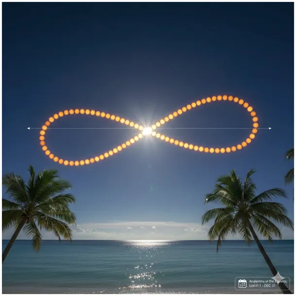
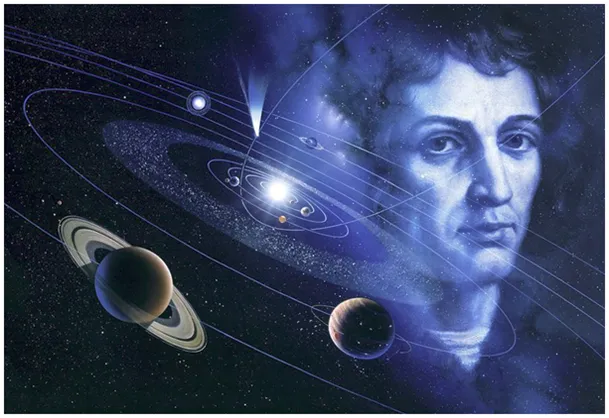

“Prossę Pana, a na Marsie to są heterocykle azotowe! "
"Prossę Pana, a na Marsie to są heterocykle azotowe! "
"Znów" na Marsie "znaleziono życie", co prawda znaleziono życie martwe, ale w weekend lepsze takie niż żadne! Upór bajkopisarzy zwących się publicystami i naukowcami jest w tej sprawie imponujący. Związki te, heterocykle azotowe, mogą powstawać w procesach czysto chemicznych, bez udziału organizmów żywych w chmurach międzygwiazdowych lub wewnątrz asteroid pod wpływem promieniowania i zmian temperatury. Heterocykle azotowe w kosmosie to dowód na to, że składniki organiczne na zupę życia są wszędzie, ale nie potwierdzają, że sama "zupa" została gdziekolwiek poza Ziemią przygotowana.

Z przyjemnością dodałem dziś do mojej listy domen wykluczonych z wyszukiwania kilkanaście portali, które te kłamstwa rozpowszechniają. Odkrycie życia poza Ziemią będzie fascynujące, będzie punktem w którym ludzka myśl o akcie stworzenia i Stwórcy nie będzie już taka jak dziś, ale to jeszcze nie teraz ! Dziś tym kłamstwem egzaltują się oszukani ignoranci.
Kopernik miał szczęście w życiu, nie chodził do żadnej szkoły.

Polecam moje teksty z frazą "Kosmos", każdy znajdzie tam coś dla siebie, nawet Ci którzy już wiedzą co to jest analemma równikowa. Zapraszam https://pawelklimczewski.pl/?s=kosmos
Paweł Klimczewski